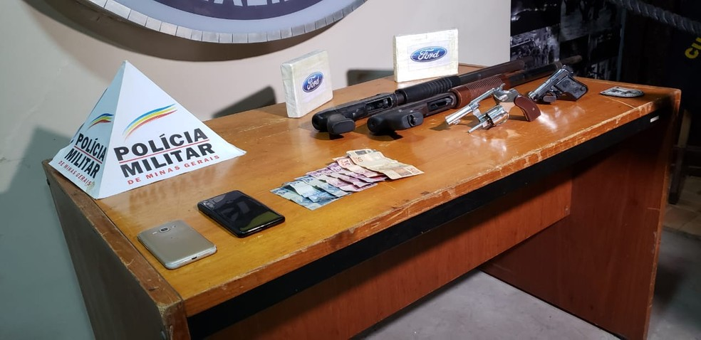

Uma denúncia anônima levou a Polícia Militar a prender dois homens, suspeitos de
envolvimento com o tráfico de drogas em Contagem, na Região Metropolitana de Belo Horizonte.
O crime foi descoberto na madrugada desta sexta-feira (23).
De acordo com os militares, entre os presos está um motorista de aplicativo. Ele era
responsável pelo transporte dos entorpecentes. Duas barras com pasta base de cocaína foram
encontradas no chão do carro dele.
O outro suspeito tentou enganar os policiais, identificando-se com o nome do irmão. Após a
farsa ser descoberta, os militares perceberam que o homem tem passagens por tráfico e
homicídio.
Além da droga, foram apreendidas quatro armas, dinheiro e dois celulares. Uma parcela do
material estava escondida em uma região de mata, no bairro Riacho das Pedras.
(23/04/2021 - 06h10) Veja a reportagem original clicando aqui.